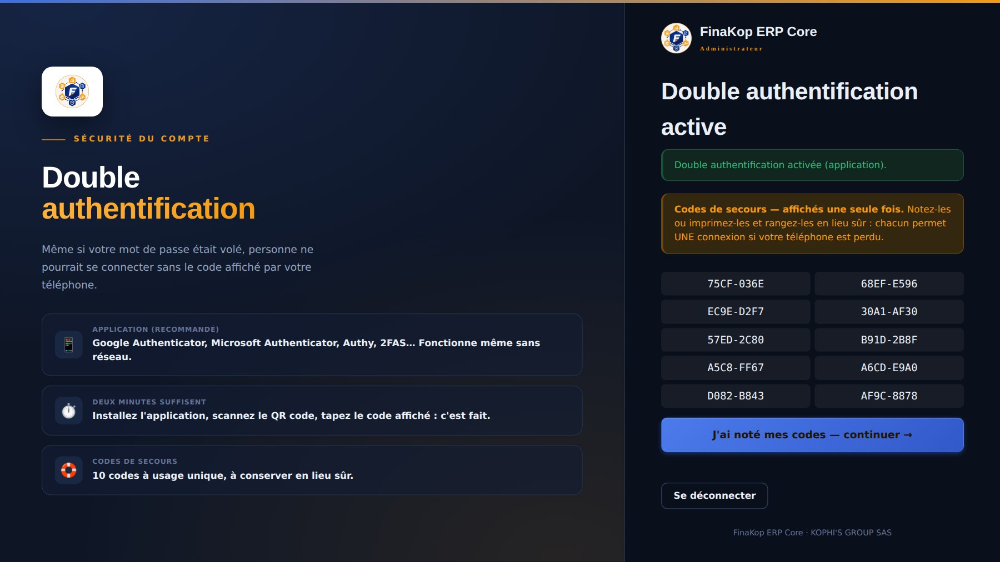
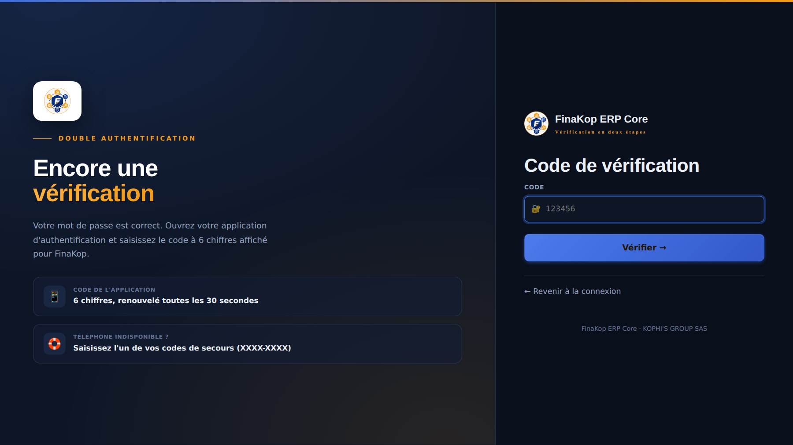

🔐
Sécuriser votre compte
La double authentification, en deux minutes
Mot de passe+ code du téléphone= compte protégé
📱
Installez une application
Sur votre téléphone, depuis Play Store ou App Store
Google AuthenticatorMicrosoft AuthenticatorAuthy2FAS · Aegis

Visez ce QR code
Sans appareil photo : saisissez cette clé
Le code à 6 chiffres affiché
Activer avec l'application
1
Scannez le QR codeDans l'application : Ajouter → Scanner un QR code. Puis tapez le code affiché et validez.

Vos 10 codes de secours (masqués ici)
Puis « J'ai noté mes codes »
2
Conservez vos codes de secours10 codes à usage unique, affichés une seule fois : imprimez-les ou rangez-les en lieu sûr.

Le code affiché par votre téléphone
Vérifier
3
À chaque connexionAprès le mot de passe, FinaKop demande le code de l'application. 5 essais au plus.
🛟
En cas de problème
Les bons réflexes
⏱️Code refuséRéglez l'heure du téléphone en automatique.
🛟Téléphone perduTapez un code de secours à la place du code.
📲Nouveau téléphoneDésactivez puis réactivez la protection pour rescanner.
💬Rien ne marcheSupport : +225 05 03 40 43 89 · supports@finakoperp.com